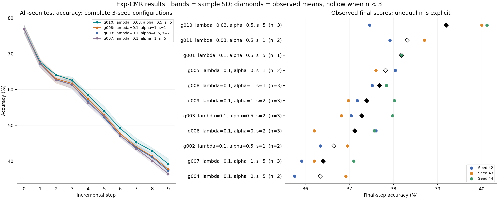
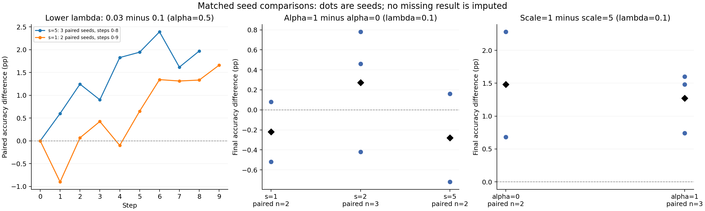

此处的顶层 summary 仅包含 exp：27 个配置、81 次计划运行，27 次完整、5 次部分完成、49 次缺失。缺失不等于失败。FAA 为 step 9 准确率；AIA 为同一 seed 的 step 0–9 简单平均，仅纳入完整轨迹。标准差为 seed 间样本标准差，不是置信区间。
λ=0.03 是目前最一致的候选方向；g010 当前平均最好，g011 的 scale 对照仍需补齐。α 的效果不单调。当前命令采用原有 offset、shrinkage 和权重裁剪；不能据此评价新加入的未裁剪公式。


| config | lam_cmr | rd_class_weight_alpha | rd_cmr_scale | n_final | final_accuracy_pct | final_sd_pp | aia_0_9_pct | aia_sd_pp |
|---|---|---|---|---|---|---|---|---|
| exp_g010 | 0.03 | 0.5 | 5 | 3 | 39.193 | 1.502 | 56.024 | 0.550 |
| exp_g011 | 0.03 | 0.5 | 1 | 2 | 38.310 | 0.552 | 55.538 | 0.340 |
| exp_g001 | 0.1 | 0.5 | 5 | 1 | 38.180 | — | 54.247 | — |
| exp_g005 | 0.1 | 0 | 1 | 2 | 37.820 | 0.311 | 55.415 | 0.317 |
| exp_g008 | 0.1 | 1 | 1 | 3 | 37.680 | 0.160 | 55.005 | 0.350 |
| exp_g009 | 0.1 | 1 | 2 | 3 | 37.393 | 0.552 | 54.894 | 0.103 |
| exp_g003 | 0.1 | 0.5 | 2 | 3 | 37.280 | 0.616 | 54.630 | 0.258 |
| exp_g006 | 0.1 | 0 | 2 | 3 | 37.120 | 0.797 | 54.709 | 0.410 |
| exp_g002 | 0.1 | 0.5 | 1 | 2 | 36.650 | 0.438 | 54.959 | 0.030 |
| exp_g007 | 0.1 | 1 | 5 | 3 | 36.407 | 0.617 | 54.425 | 0.402 |
| exp_g004 | 0.1 | 0 | 5 | 2 | 36.340 | 0.820 | 54.817 | 0.390 |
同 seed 的 step 0 与当前 exp 不完全一致，不能作为严格的 penalty 单变量对照。A 组 λ=.03/α=.5，B 组 λ=.1/α=1；组间同时改变两个参数。
| group | tolerance | final_accuracy_pct | final_sd_pp | aia_0_9_pct | old_accuracy_step9_pct | new_accuracy_step9_pct |
|---|---|---|---|---|---|---|
| A | 0.000 | 39.487 | 1.009 | 56.057 | 40.556 | 29.867 |
| A | 0.010 | 40.313 | 0.363 | 56.211 | 41.430 | 30.267 |
| A | 0.050 | 39.833 | 0.959 | 56.151 | 40.926 | 30.000 |
| A | 0.100 | 40.353 | 1.368 | 56.175 | 41.667 | 28.533 |
| B | 0.000 | 39.753 | 0.283 | 56.176 | 40.889 | 29.533 |
| B | 0.010 | 39.607 | 0.752 | 56.012 | 40.956 | 27.467 |
| B | 0.050 | 39.527 | 0.844 | 55.894 | 40.667 | 29.267 |
| B | 0.100 | 40.113 | 0.977 | 56.109 | 41.326 | 29.200 |
固定 alpha=.5，scale=5 时 lambda=.03 相对 .1 在三个匹配 seed 的 step 1–8 平均提高 1.562 个百分点；scale=1 时两个完整匹配 seed 的末阶段分别提高 1.58、1.74 个百分点。scale=1 在 lambda=.1 下优于 scale=5 的证据较一致，但在 lambda=.03 下不能据现有两个 seed 排除 scale=1。alpha=1 相对 alpha=0 的改善并不一致。
Exp 单样本目标为 s*exp(g/s)，g=B_ref-B_cur-tolerance，关于当前 margin 的导数为 -exp(g/s)。g=0 时梯度不随 scale 改变，损失值却等于 s；因此不能用原始 loss 或 weighted_cmr/train_loss 大小直接比较约束强度。较低 lambda 可能缓解对旧表示的持续推动与新类学习的冲突，但这是待用梯度与 old/new accuracy 验证的机制假设。
检查点加特征数据可以重新计算预测、逐类指标、特征与固定 probe 上的梯度。原始 CMR 原型/LOO 还依赖当阶段的 replay IDs；相同 seed 只有在代码、样本顺序、特征可用性和随机数消耗一致时才可能复原。最佳检查点不能恢复所有 epoch 的优化器状态、Need 轨迹或历史 batch 统计。当前本地没有 exp 对应 metrics/检查点、原始日志或特征文件，已有数据仅为旧 hinge 存档。
后续保存 git commit、完整参数、类别映射和数据版本、每阶段 replay IDs、prototype bank、best_epoch、固定 probe IDs 和逐样本预测。新加入的关闭权重裁剪公式应单独命名对照；它要求 alpha<1，不能直接沿用旧路径的 alpha=1。
可下载同目录中的 exp_config_summary.csv、exp_seed_metrics.csv、paired_comparisons.csv、archived_hinge_reference.csv；audit.json 记录输入哈希和核对信息。analyze_results.py 可重新生成所有结果。原始 summary 文件未修改。